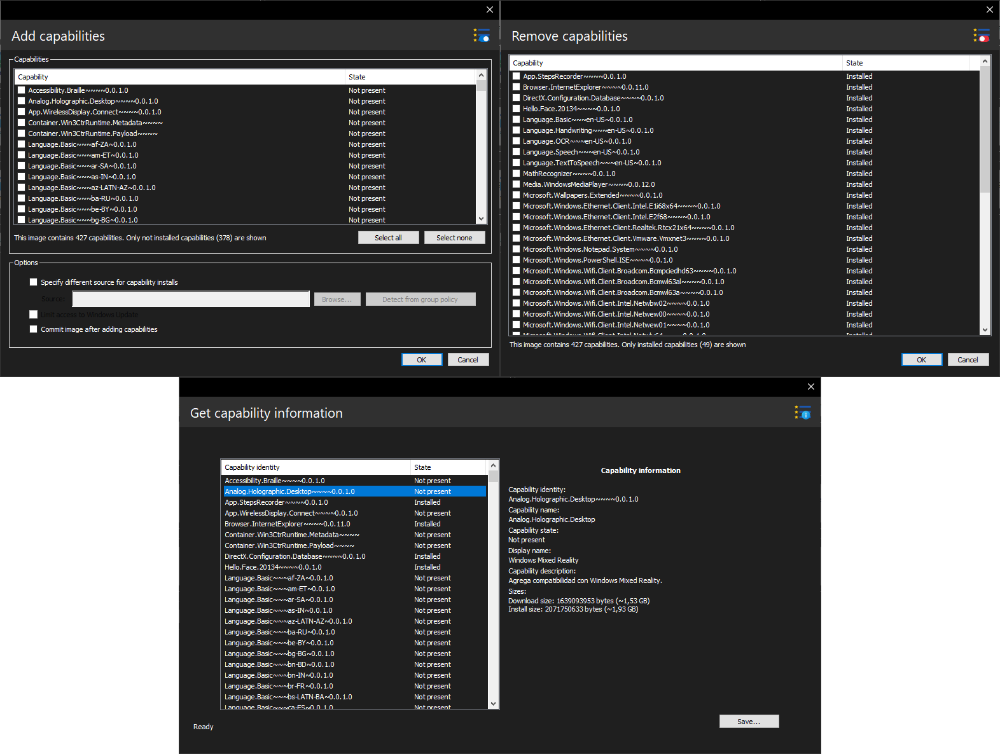

Capability operations
By performing capability package (Feature on Demand) operations, you can modify the functionality of the Windows image.
These operations are supported on Windows 10 and later operating systems, including Server versions.
Available tasks
